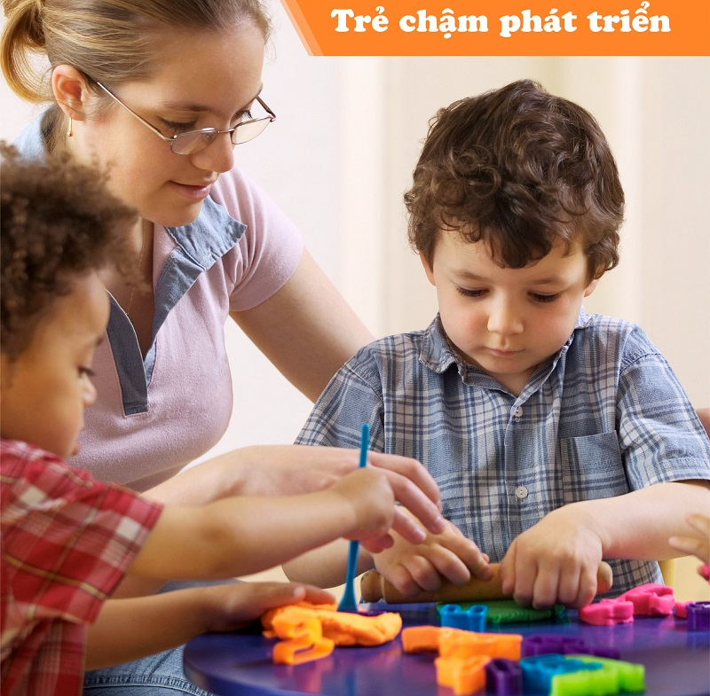
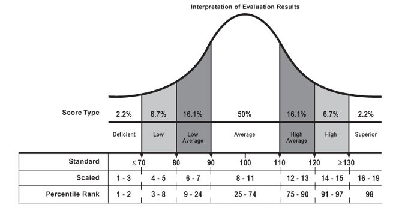

Trẻ chậm phát triển
Trung tâm dạy trẻ chậm phát triển trí tuệ & ngôn ngữ Nhân Hòa. Các chương trình và phương pháp can thiệp
cho trẻ chậm phát triển trí tuệ tốt nhất tại thành phố Hồ Chí Minh. Với đội ngũ giáo viên giàu kinh
nghiệm kết hợp với phương pháp hiệu quả hướng đến một môi trường học tốt nhất cho trẻ.

Thế nào là trẻ chậm phát triển trí tuệ?
Chậm phát triển trí tuệ mô tả các trẻ có chỉ số thông minh và hành vi thích ứng dưới 70 điểm (bình thường trẻ
có chỉ số thông minh và hành vi thích ứng từ 90 ÷ 110 điểm). Theo thống kê, tỉ lệ trẻ em bị chậm phát triển
chiếm khoảng 2,2% dân số (xem thêm biểu đồ bên dưới).

Trẻ chậm phát triển trí tuệ được chia thành 4 mức độ khác nhau:
- Trẻ chậm phát triển trí tuệ nhẹ: Là những trẻ có điểm đánh giá trí tuệ từ 55-69 điểm. Những trẻ này
có sự phát triển về vận động, trẻ chậm phát triển ngôn ngữ và kỹ năng xã hội thấp hơn những trẻ cùng tuổi có
sự phát triển thông thường. Tuy nhiên, vì những chậm trễ trẻ gặp phải khá mờ nhạt nên trẻ thường không được
phát hiện và hỗ trợ sớm cho tới khi đi học. Ở môi trường học đường, trẻ có thể gặp thất bại nhiều hơn trong
việc đọc, viết và tính toán. Trẻ chậm phát triển nhẹ có thể theo được chương trình phổ thông hòa nhập tới
hết cấp 1 với một số khó khăn nhất định. Do chương trình cấp 2 cần khả năng hiểu kiến thức rộng hơn, sự linh
hoạt nhận thức cao hơn và những kiến thức học thuật rộng nên trẻ gặp rất nhiều khó khăn trong giai đoạn này.
Trẻ thường được định hướng học nghề để có thể có một công việc phù hợp trong tương lai nhằm hòa nhập tốt hơn
vào cộng đồng.
- Trẻ chậm phát triển trí tuệ trung bình: Là những trẻ có điểm đánh giá trí tuệ từ 40-54 điểm. Trẻ có
mốc phát triển vận động khá nhưng khả năng ngôn ngữ và nhận thức của trẻ có thể chậm trễ đáng kể so với lứa
tuổi. Những trẻ em này gặp nhiều khó khăn hơn khi theo học chương trình giáo dục phổ thông hoà nhập cùng các
bạn trong độ tuổi. Trẻ có thể tiếp nhận được những kiến thức về toán, tiếng Việt và các môn khoa học xã hội
khác như lịch sử, địa lý ở giai đoạn lớn hơn. Tuy nhiên, do sự chậm trễ so với các bạn cùng lứa tuổi là quá
lớn nên trẻ cần được theo học một chương trình giáo dục đặc biệt dành cho trẻ chậm phát triển trung bình và
nặng.
- Trẻ chậm phát triển nặng: Là những trẻ có điểm đánh giá trí tuệ từ 25-39 điểm. Trẻ có mốc phát triển
vận động, khả năng trẻ chậm phát triển ngôn ngữ hiểu, điễn đạt và nhận thức rất chậm trễ so với lứa tuổi.
Những trẻ em này gặp nhiều khó khăn trong việc học đọc, viết và làm toán nên không thể theo học được chương
trình giáo dục phổ thông hoà nhập cùng các bạn trong độ tuổi. Trẻ cần được xếp vào những lớp giáo dục chuyên
biệt với chương trình cá nhân được thiết kế riêng để cải thiện khả năng nhận thức, hiểu, diễn đạt…
- Trẻ chậm phát triển rất nặng: Là những trẻ có điểm đánh giá trí tuệ dưới 25. Những trẻ em này có sự
phát triển về vận động, nhận thức và giao tiếp rất chậm trễ. Trẻ không thể tham gia vào việc học cùng các
bạn cùng độ tuổi hoặc với các em nhỏ tuổi hơn. Tới giai đoạn trưởng thành trẻ cũng gặp nhiều khó khăn trong
việc tự chăm sóc bản thân và cần tới sự giám sát rất nhiều từ phụ huynh.
Các can thiệp cho trẻ chậm phát triển trí tuệ tại trung tâm Nhân Hòa.
Tùy vào mức độ chậm trẻ gặp phải và độ tuổi trẻ tới can thiệp tại trung tâm để các chuyên viên can thiệp xây
dựng chương trình can thiệp cho trẻ chậm phát triển trí tuệ phù hợp.
Trẻ dưới 6 tuổi: Trẻ được can thiệp cá nhân để cải thiện những khó khăn như nhận thức chữ số, hình dạng, ngôn ngữ
hiểu, diễn đạt, giao tiếp, kiến thức xung quanh hay vận động tinh, thô và tự chăm sóc.
Trẻ 6 tuổi trở lên có vấn đề chậm nhẹ: Trẻ được can thiệp cá nhân để cải thiện những khó khăn đang gặp nhằm giúp
trẻ hoà nhập tại trường phổ thông hiệu quả hơn và có một số gờ can thiệp trong nhóm để phát triển khả năng giao
tiếp và làm việc nhóm cho hiệu quả.
Trẻ 6 tuổi trở lên có vấn đề chậm trung bình tới nặng: Trẻ chậm phát triển được can thiệp cá nhân và nhóm để thực
hiện những mục tiêu và chương trình cá nhân được xây dựng riêng cho từng trẻ. Chương trình cá nhân này được xây
dựng dựa theo khung chương trình giáo dục căn bản dành cho trẻ chậm trung bình tới nặng. Ngoài việc xây dựng
những kỹ năng cụ thể trẻ cần có, chương trình còn nhấn mạnh tới mức độ độc lập trong việc thực hiện các kỹ năng
của trẻ. Nhằm giúp trẻ lớn lên có thể độc lập và hoà nhập thành công vào cộng đồng khi trưởng thành.
Các lĩnh vực cụ thể trẻ sẽ được cải thiện:
- Học thuật chức năng
- Học đọc, viết, tính toán, địa lý địa phương và những hoạt động đang diễn ra.
- Mục đích của lĩnh vực học thuật chức năng là để nhấn mạnh những kỹ năng học thuật cần thiết để tham gia
vào các hoạt động hàng ngày với các mục tiêu tối đa hóa tính tự chủ.
- Các mục tiêu được xây dựng dựa trên khả năng của các trẻ.
- Để có chức năng những kỹ năng này phải được liên kết với những hoạt động thực tiễn mà trẻ bắt gặp trong
cuộc sống và học tập hàng ngày như tìm ra tên của mình trên bảng, đọc tên các vật dụng cần mua trong
danh sách.
- Các kỹ năng học thuật chức năng được tiếp nhận và ứng dụng trong các môi trường khác nhau.
- Lĩnh vực trong nhà (tự chăm sóc bản thân và làm việc nhà)
- Mục đích của lĩnh vực trong nhà là chuẩn bị cho trẻ có thể sống độc lập trong môi trường của các em.
- Lĩnh vực này bao gồm các kỹ năng cần thiết cho phép trẻ độc lập hơn trong việc xử trí việc nhà và việc
cá nhân. Nhấn mạnh việc chăm sóc sức khỏe cá nhân, chuẩn bị thức ăn và các kỹ năng giữ gìn, chăm sóc nhà
cửa, đời sống gia đình/xã hội và các mối quan hệ giữa các cá nhân cũng như làm thế nào để các kỹ năng
này được áp dụng vào cộng đồng.
- Để trẻ thực hành độc lập các mục tiêu trọng lĩnh vực này, các em cần nhiều tới sự tham gia của các thành
viên trong gia đình và những người chăm sóc.
- Lĩnh vực cộng đồng:
- Mục đích của lĩnh vực cộng đồng là để chuẩn bị cho trẻ tiếp cận và sử dụng các tiện ích trong môi trường
công cộng một cách độc lập và hoàn chỉnh nhất.
- Lĩnh vực này bao gồm các kỹ năng di chuyển trong môi trường công cộng, sử dụng tiện ích công cộng, đi
mua sắm, vui chơi….
- Trẻ chậm phát triển cần được nối kết với các chương trình, dịch vụ, hoạt động và hỗ trợ để họ giúp các
em gia tăng sự tiếp cận với các lựa chọn sau khi ra trường.
- Lĩnh vực nghề nghiệp:
- Mục đích của lĩnh vực nghề nghiệp (hướng nghiệp) là tăng khả năng thực hiện chức năng của trẻ như một
người trưởng thành có đóng góp cho xã hội và tăng cơ hội tìm kiếm việc làm khi trưởng thành để trẻ có
được một cuộc sống độc lập và có ý nghĩa.
- Những hướng dẫn trong lĩnh vực này bao gồm các kỹ năng liên quan tới làm việc như tập huấn về các công
việc trong khuôn viên trung tâm, kỹ năng làm việc, chương trình trải nghiệm với các công việc ngoài
trung tâm cũng như ứng dụng thực tế các kỹ năng này vào cộng đồng và tìm việc khi trưởng thành.
- Lĩnh vực vui chơi giải trí:
- Mục đích là để trẻ có khả năng tham gia vào các hoạt động giải trí có tính xây dựng và cá nhân đó hài
lòng ở trung tâm, ở nhà và trong cộng đồng.
- Lĩnh vực này tập trung vào các trò chơi, câu đố, sở thích, các cuộc gặp gỡ xã hội, quan tâm tới các hành
vi tự điều chỉnh và làm thế nào để những kỹ năng này áp dụng vào trong cộng đồng.
- Huấn luyện phụ huynh:
- Nhằm giúp phụ huynh hiểu về những khó khăn của trẻ, biết cách hỗ trợ trẻ chậm phát triển tại nhà như tiếp
tục các mục tiêu phát triển các kỹ năng tự chăm sóc, làm việc nhà, giao tiếp, diễn đạt …trong môi trường gia
đình. Ngoài ra, cha mẹ cũng được hướng dẫn các kỹ năng xử lý hành vi để có những đáp ứng phù hợp khi xử lý
các vấn đề của trẻ. Chuyên viên can thiệp sẽ làm mẫu nhiều lần các kỹ thuật cho phụ huynh quan sát, phân
tích những điều cha mẹ đã làm đạt và những điều cần cải thiện để hỗ trợ trẻ hiệu quả hơn mỗi ngày.
☎️ Hotline: 02866537779; Di động: 0987 174 279 –
Cô Nguyễn Thị Thu.
📧 Email: trungtamnhanhoa2014@gmail.com hoặc nguyenthusy@gmail.com.